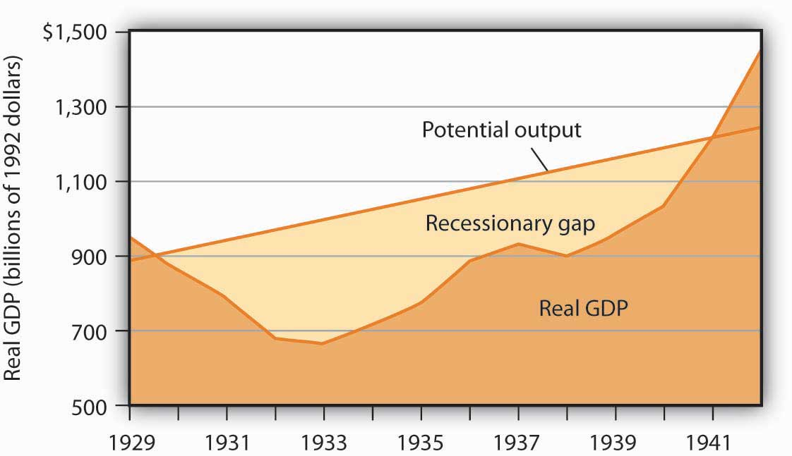
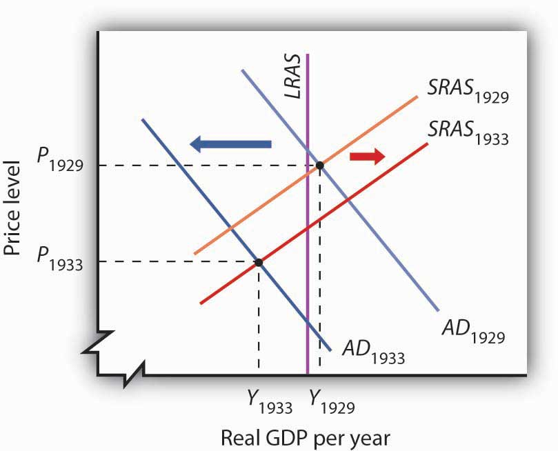
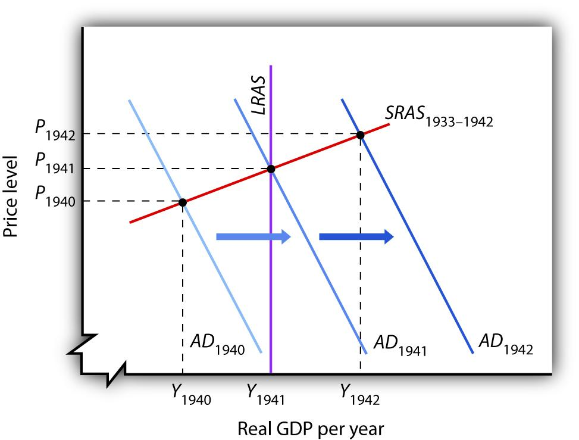
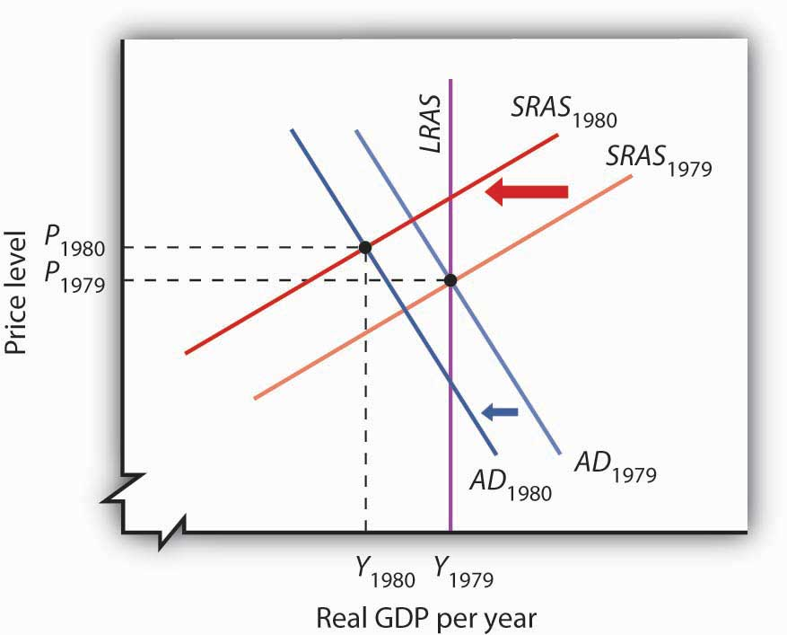
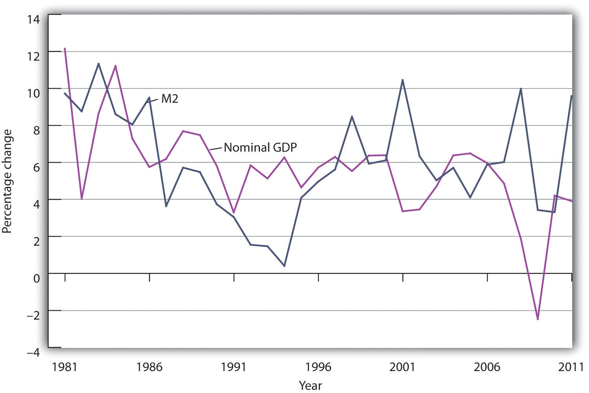

It is the 1930s. Many people have begun to wonder if the United States will ever escape the Great Depression’s cruel grip. Forecasts that prosperity lies just around the corner take on a hollow ring.
The collapse seems to defy the logic of the dominant economic view—that economies should be able to reach full employment through a process of self-correction. The old ideas of macroeconomics do not seem to work, and it is not clear what new ideas should replace them.
In Britain, Cambridge University economist John Maynard Keynes is struggling with ideas that he thinks will stand the conventional wisdom on its head. He is confident that he has found the key not only to understanding the Great Depression but also to correcting it.
It is the 1960s. Most economists believe that Keynes’s ideas best explain fluctuations in economic activity. The tools Keynes suggested have won widespread acceptance among governments all over the world; the application of expansionary fiscal policy in the United States appears to have been a spectacular success. But economist Milton Friedman of the University of Chicago continues to fight a lonely battle against what has become the Keynesian orthodoxy. He argues that money, not fiscal policy, is what affects aggregate demand. He insists not only that fiscal policy cannot work, but that monetary policy should not be used to move the economy back to its potential output. He counsels a policy of steady money growth, leaving the economy to adjust to long-run equilibrium on its own.
It is 1970. The economy has just taken a startling turn: Real GDP has fallen, but inflation has remained high. A young economist at Carnegie–Mellon University, Robert E. Lucas, Jr., finds this a paradox, one that he thinks cannot be explained by Keynes’s theory. Along with several other economists, he begins work on a radically new approach to macroeconomic thought, one that will challenge Keynes’s view head-on. Lucas and his colleagues suggest a world in which self-correction is swift, rational choices by individuals generally cancel the impact of fiscal and monetary policies, and stabilization efforts are likely to slow economic growth.
John Maynard Keynes, Milton Friedman, and Robert E. Lucas, Jr., each helped to establish a major school of macroeconomic thought. Although their ideas clashed sharply, and although there remains considerable disagreement among economists about a variety of issues, a broad consensus among economists concerning macroeconomic policy seemed to emerge in the 1980s, 1990s, and early 2000s. The Great Recession and the financial crisis in the late 2000s, though, set off another round of controversy.
In this chapter we will examine the macroeconomic developments of six decades: the 1930s, 1960s, 1970s, 1980s, 1990s, and 2000s. We will use the aggregate demand–aggregate supply model to explain macroeconomic changes during these periods, and we will see how the three major economic schools were affected by these events. We will also see how these schools of thought affected macroeconomic policy. Finally, we will see how the evolution of macroeconomic thought and policy influenced how economists design policy prescriptions for dealing with the recession that began in late 2007, which turned out to be the largest since the Great Depression.
In examining the ideas of these schools, we will incorporate concepts such as the potential output and the natural level of employment. While such terms had not been introduced when some of the major schools of thought first emerged, we will use them when they capture the ideas economists were presenting.
It is hard to imagine that anyone who lived during the Great Depression was not profoundly affected by it. From the beginning of the Depression in 1929 to the time the economy hit bottom in 1933, real GDP plunged nearly 30%. Real per capita disposable income sank nearly 40%. More than 12 million people were thrown out of work; the unemployment rate soared from 3% in 1929 to 25% in 1933. Some 85,000 businesses failed. Hundreds of thousands of families lost their homes. By 1933, about half of all mortgages on all urban, owner-occupied houses were delinquent.David C. Wheelock, “The Federal Response to Home Mortgage Distress: Lessons from the Great Depression,” Federal Reserve Bank of St. Louis Review 90, no. 3 (Part 1) (May/June 2008): 133–48.
The economy began to recover after 1933, but a huge recessionary gap persisted. Another downturn began in 1937, pushing the unemployment rate back up to 19% the following year.
The contraction in output that began in 1929 was not, of course, the first time the economy had slumped. But never had the U.S. economy fallen so far and for so long a period. Economic historians estimate that in the 75 years before the Depression there had been 19 recessions. But those contractions had lasted an average of less than two years. The Great Depression lasted for more than a decade. The severity and duration of the Great Depression distinguish it from other contractions; it is for that reason that we give it a much stronger name than “recession.”
Figure 32.1 "The Depression and the Recessionary Gap" shows the course of real GDP compared to potential output during the Great Depression. The economy did not approach potential output until 1941, when the pressures of world war forced sharp increases in aggregate demand.
Figure 32.1 The Depression and the Recessionary Gap
The dark-shaded area shows real GDP from 1929 to 1942, the upper line shows potential output, and the light-shaded area shows the difference between the two—the recessionary gap. The gap nearly closed in 1941; an inflationary gap had opened by 1942. The chart suggests that the recessionary gap remained very large throughout the 1930s.
The Great Depression came as a shock to what was then the conventional wisdom of economics. To see why, we must go back to the classical tradition of macroeconomics that dominated the economics profession when the Depression began.
Classical economicsThe body of macroeconomic thought, associated primarily with 19th-century British economist David Ricardo, that focused on the long run and on the forces that determine and produce growth in an economy’s potential output. is the body of macroeconomic thought associated primarily with 19th-century British economist David Ricardo. His Principles of Political Economy and Taxation, published in 1817, established a tradition that dominated macroeconomic thought for over a century. Ricardo focused on the long run and on the forces that determine and produce growth in an economy’s potential output. He emphasized the ability of flexible wages and prices to keep the economy at or near its natural level of employment.
According to the classical school, achieving what we now call the natural level of employment and potential output is not a problem; the economy can do that on its own. Classical economists recognized, however, that the process would take time. Ricardo admitted that there could be temporary periods in which employment would fall below the natural level. But his emphasis was on the long run, and in the long run all would be set right by the smooth functioning of the price system.
Economists of the classical school saw the massive slump that occurred in much of the world in the late 1920s and early 1930s as a short-run aberration. The economy would right itself in the long run, returning to its potential output and to the natural level of employment.
In Britain, which had been plunged into a depression of its own, John Maynard Keynes had begun to develop a new framework of macroeconomic analysis, one that suggested that what for Ricardo were “temporary effects” could persist for a long time, and at terrible cost. Keynes’s 1936 book, The General Theory of Employment, Interest and Money, was to transform the way many economists thought about macroeconomic problems.
In a nutshell, we can say that Keynes’s book shifted the thrust of macroeconomic thought from the concept of aggregate supply to the concept of aggregate demand. Ricardo’s focus on the tendency of an economy to reach potential output inevitably stressed the supply side—an economy tends to operate at a level of output given by the long-run aggregate supply curve. Keynes, in arguing that what we now call recessionary or inflationary gaps could be created by shifts in aggregate demand, moved the focus of macroeconomic analysis to the demand side. He argued that prices in the short run are quite sticky and suggested that this stickiness would block adjustments to full employment.
Keynes dismissed the notion that the economy would achieve full employment in the long run as irrelevant. “In the long run,” he wrote acidly, “we are all dead.”
Keynes’s work spawned a new school of macroeconomic thought, the Keynesian school. Keynesian economicsThe body of macroeconomic thought that asserts that changes in aggregate demand can create gaps between the actual and potential levels of output, and that such gaps can be prolonged. It stresses the use of fiscal and monetary policy to close such gaps. asserts that changes in aggregate demand can create gaps between the actual and potential levels of output, and that such gaps can be prolonged. Keynesian economists stress the use of fiscal and of monetary policy to close such gaps.
The experience of the Great Depression certainly seemed consistent with Keynes’s argument. A reduction in aggregate demand took the economy from above its potential output to below its potential output, and, as we saw in Figure 32.1 "The Depression and the Recessionary Gap", the resulting recessionary gap lasted for more than a decade. While the Great Depression affected many countries, we shall focus on the U.S. experience.
The plunge in aggregate demand began with a collapse in investment. The investment boom of the 1920s had left firms with an expanded stock of capital. As the capital stock approached its desired level, firms did not need as much new capital, and they cut back investment. The stock market crash of 1929 shook business confidence, further reducing investment. Real gross private domestic investment plunged nearly 80% between 1929 and 1932. We have learned of the volatility of the investment component of aggregate demand; it was very much in evidence in the first years of the Great Depression.
Other factors contributed to the sharp reduction in aggregate demand. The stock market crash reduced the wealth of a small fraction of the population (just 5% of Americans owned stock at that time), but it certainly reduced the consumption of the general population. The stock market crash also reduced consumer confidence throughout the economy. The reduction in wealth and the reduction in confidence reduced consumption spending and shifted the aggregate demand curve to the left.
Fiscal policy also acted to reduce aggregate demand. As consumption and income fell, governments at all levels found their tax revenues falling. They responded by raising tax rates in an effort to balance their budgets. The federal government, for example, doubled income tax rates in 1932. Total government tax revenues as a percentage of GDP shot up from 10.8% in 1929 to 16.6% in 1933. Higher tax rates tended to reduce consumption and aggregate demand.
Other countries were suffering declining incomes as well. Their demand for U.S. goods and services fell, reducing the real level of exports by 46% between 1929 and 1933. The Smoot–Hawley Tariff Act of 1930 dramatically raised tariffs on products imported into the United States and led to retaliatory trade-restricting legislation around the world. This act, which more than 1,000 economists opposed in a formal petition, contributed to the collapse of world trade and to the recession.
As if all this were not enough, the Fed, in effect, conducted a sharply contractionary monetary policy in the early years of the Depression. The Fed took no action to prevent a wave of bank failures that swept the country at the outset of the Depression. Between 1929 and 1933, one-third of all banks in the United States failed. As a result, the money supply plunged 31% during the period.
The Fed could have prevented many of the failures by engaging in open-market operations to inject new reserves into the system and by lending reserves to troubled banks through the discount window. But it generally refused to do so; Fed officials sometimes even applauded bank failures as a desirable way to weed out bad management!
Figure 32.2 Aggregate Demand and Short-Run Aggregate Supply: 1929–1933
Slumping aggregate demand brought the economy well below the full-employment level of output by 1933. The short-run aggregate supply curve increased as nominal wages fell. In this analysis, and in subsequent applications in this chapter of the model of aggregate demand and aggregate supply to macroeconomic events, we are ignoring shifts in the long-run aggregate supply curve in order to simplify the diagram.
Figure 32.2 "Aggregate Demand and Short-Run Aggregate Supply: 1929–1933" shows the shift in aggregate demand between 1929, when the economy was operating just above its potential output, and 1933. The plunge in aggregate demand produced a recessionary gap. Our model tells us that such a gap should produce falling wages, shifting the short-run aggregate supply curve to the right. That happened; nominal wages plunged roughly 20% between 1929 and 1933. But we see that the shift in short-run aggregate supply was insufficient to bring the economy back to its potential output.
The failure of shifts in short-run aggregate supply to bring the economy back to its potential output in the early 1930s was partly the result of the magnitude of the reductions in aggregate demand, which plunged the economy into the deepest recessionary gap ever recorded in the United States. We know that the short-run aggregate supply curve began shifting to the right in 1930 as nominal wages fell, but these shifts, which would ordinarily increase real GDP, were overwhelmed by continued reductions in aggregate demand.
A further factor blocking the economy’s return to its potential output was federal policy. President Franklin Roosevelt thought that falling wages and prices were in large part to blame for the Depression; programs initiated by his administration in 1933 sought to block further reductions in wages and prices. That stopped further reductions in nominal wages in 1933, thus stopping further shifts in aggregate supply. With recovery blocked from the supply side, and with no policy in place to boost aggregate demand, it is easy to see now why the economy remained locked in a recessionary gap so long.
Keynes argued that expansionary fiscal policy represented the surest tool for bringing the economy back to full employment. The United States did not carry out such a policy until world war prompted increased federal spending for defense. New Deal policies did seek to stimulate employment through a variety of federal programs. But, with state and local governments continuing to cut purchases and raise taxes, the net effect of government at all levels on the economy did not increase aggregate demand during the Roosevelt administration until the onset of world war.For a discussion of fiscal policy during the Great Depression, see E. Cary Brown, “Fiscal Policy in the ’Thirties: A Reappraisal,” American Economic Review 46, no. 5 (December 1956): 857–79. As Figure 32.3 "World War II Ends the Great Depression" shows, expansionary fiscal policies forced by the war had brought output back to potential by 1941. The U.S. entry into World War II after Japan’s attack on American forces in Pearl Harbor in December of 1941 led to much sharper increases in government purchases, and the economy pushed quickly into an inflationary gap.
Figure 32.3 World War II Ends the Great Depression
Increased U.S. government purchases, prompted by the beginning of World War II, ended the Great Depression. By 1942, increasing aggregate demand had pushed real GDP beyond potential output.
For Keynesian economists, the Great Depression provided impressive confirmation of Keynes’s ideas. A sharp reduction in aggregate demand had gotten the trouble started. The recessionary gap created by the change in aggregate demand had persisted for more than a decade. And expansionary fiscal policy had put a swift end to the worst macroeconomic nightmare in U.S. history—even if that policy had been forced on the country by a war that would prove to be one of the worst episodes of world history.
Imagine that it is 1933. President Franklin Roosevelt has just been inaugurated and has named you as his senior economic adviser. Devise a program to bring the economy back to its potential output. Using the model of aggregate demand and aggregate supply, demonstrate graphically how your proposal could work.
Although David Ricardo’s focus on the long run emerged as the dominant approach to macroeconomic thought, not all of his contemporaries agreed with his perspective. Many 18th- and 19th-century economists developed theoretical arguments suggesting that changes in aggregate demand could affect the real level of economic activity in the short run. Like the new Keynesians, they based their arguments on the concept of price stickiness.
Henry Thornton’s 1802 book, An Enquiry into the Nature and Effects of the Paper Credit of Great Britain, argued that a reduction in the money supply could, because of wage stickiness, produce a short-run slump in output:
“The tendency, however, of a very great and sudden reduction of the accustomed number of bank notes, is to create an unusual and temporary distress, and a fall of price arising from that distress. But a fall arising from temporary distress, will be attended probably with no correspondent fall in the rate of wages; for the fall of price, and the distress, will be understood to be temporary, and the rate of wages, we know, is not so variable as the price of goods. There is reason, therefore, to fear that the unnatural and extraordinary low price arising from the sort of distress of which we now speak, would occasion much discouragement of the fabrication of manufactures.”
A half-century earlier, David Hume had noted that an increase in the quantity of money would boost output in the short run, again because of the stickiness of prices. In an essay titled “Of Money,” published in 1752, Hume described the process through which an increased money supply could boost output:
“At first, no alteration is perceived; by degrees the price rises, first of one commodity, then of another, till the whole at least reaches a just proportion with the new quantity of (money) which is in the kingdom. In my opinion, it is only in this interval or intermediate situation … that the encreasing quantity of gold and silver is favourable to industry.”
Hume’s argument implies sticky prices; some prices are slower to respond to the increase in the money supply than others.
Economists of the 18th and 19th century are generally lumped together as adherents to the classical school, but their views were anything but uniform. Many developed an analytical framework that was quite similar to the essential elements of new Keynesian economists today. Economist Thomas Humphrey, at the Federal Reserve Bank of Richmond, marvels at the insights shown by early economists: “When you read these old guys, you find out first that they didn’t speak with one voice. There was no single body of thought to which everyone subscribed. And second, you find out how much they knew. You could take Henry Thornton’s 1802 book as a textbook in any money course today.”
Source: Thomas M. Humphrey, “Nonneutrality of Money in Classical Monetary Thought,” Federal Reserve Bank of Richmond Economic Review 77, no. 2 (March/April 1991): 3–15, and personal interview.
An expansionary fiscal or monetary policy, or a combination of the two, would shift aggregate demand to the right as shown in Panel (a), ideally returning the economy to potential output. One piece of evidence suggesting that fiscal policy would work is the swiftness with which the economy recovered from the Great Depression once World War II forced the government to carry out such a policy. An alternative approach would be to do nothing. Ultimately, that should force nominal wages down further, producing increases in short-run aggregate supply, as in Panel (b). We do not know if such an approach might have worked; federal policies enacted in 1933 prevented wages and prices from falling further than they already had.
The experience of the Great Depression led to the widespread acceptance of Keynesian ideas among economists, but its acceptance as a basis for economic policy was slower. The administrations of Presidents Roosevelt, Truman, and Eisenhower rejected the notion that fiscal policy could or should be used to manipulate real GDP. Truman vetoed a 1948 Republican-sponsored tax cut aimed at stimulating the economy after World War II (Congress, however, overrode the veto), and Eisenhower resisted stimulative measures to deal with the recessions of 1953, 1957, and 1960.
It was the administration of President John F. Kennedy that first used fiscal policy with the intent of manipulating aggregate demand to move the economy toward its potential output. Kennedy’s willingness to embrace Keynes’s ideas changed the nation’s approach to fiscal policy for the next two decades.
We can think of the macroeconomic history of the 1960s as encompassing two distinct phases. The first showed the power of Keynesian policies to correct economic difficulties. The second showed the power of these same policies to create them.
President Kennedy took office in 1961 with the economy in a recessionary gap. He had appointed a team of economic advisers who believed in Keynesian economics, and they advocated an activist approach to fiscal policy. The new president was quick to act on their advice.
Expansionary policy served the administration’s foreign-policy purposes. Kennedy argued that the United States had fallen behind the Soviet Union, its avowed enemy, in military preparedness. He won approval from Congress for sharp increases in defense spending in 1961.
The Kennedy administration also added accelerated depreciation to the tax code. Under the measure, firms could deduct depreciation expenses more quickly, reducing their taxable profits—and thus their taxes—early in the life of a capital asset. The measure encouraged investment. The administration also introduced an investment tax credit, which allowed corporations to reduce their income taxes by 10% of their investment in any one year. The combination of increased defense spending and tax measures to stimulate investment provided a quick boost to aggregate demand.
The Fed followed the administration’s lead. It, too, shifted to an expansionary policy in 1961. The Fed purchased government bonds to increase the money supply and reduce interest rates.
As shown in Panel (a) of Figure 32.4 "The Two Faces of Expansionary Policy in the 1960s", the expansionary fiscal and monetary policies of the early 1960s had pushed real GDP to its potential by 1963. But the concept of potential output had not been developed in 1963; Kennedy administration economists had defined full employment to be an unemployment rate of 4%. The actual unemployment rate in 1963 was 5.7%; the perception of the time was that the economy needed further stimulus.
Figure 32.4 The Two Faces of Expansionary Policy in the 1960s

Expansionary fiscal and monetary policy early in the 1960s (Panel [a]) closed a recessionary gap, but continued expansionary policy created an inflationary gap by the end of the decade (Panel [b]). The short-run aggregate supply curve began shifting to the left, but expansionary policy continued to shift aggregate demand to the right and kept the economy in an inflationary gap.
Kennedy proposed a tax cut in 1963, which Congress would approve the following year, after the president had been assassinated. In retrospect, we may regard the tax cut as representing a kind of a recognition lag— policy makers did not realize the economy had already reached what we now recognize was its potential output. Instead of closing a recessionary gap, the tax cut helped push the economy into an inflationary gap, as illustrated in Panel (b) of Figure 32.4 "The Two Faces of Expansionary Policy in the 1960s".
The expansionary policies, however, did not stop with the tax cut. Continued increases in federal spending for the newly expanded war in Vietnam and for President Lyndon Johnson’s agenda of domestic programs, together with continued high rates of money growth, sent the aggregate demand curve further to the right. While President Johnson’s Council of Economic Advisers recommended contractionary policy as early as 1965, macroeconomic policy remained generally expansionary through 1969. Wage increases began shifting the short-run aggregate supply curve to the left, but expansionary policy continued to increase aggregate demand and kept the economy in an inflationary gap for the last six years of the 1960s. Panel (b) of Figure 32.4 "The Two Faces of Expansionary Policy in the 1960s" shows expansionary policies pushing the economy beyond its potential output after 1963.
The 1960s had demonstrated two important lessons about Keynesian macroeconomic policy. First, stimulative fiscal and monetary policy could be used to close a recessionary gap. Second, fiscal policies could have a long implementation lag. The tax cut recommended by President Kennedy’s economic advisers in 1961 was not enacted until 1964—after the recessionary gap it was designed to fight had been closed. The tax increase recommended by President Johnson’s economic advisers in 1965 was not passed until 1968—after the inflationary gap it was designed to close had widened.
Macroeconomic policy after 1963 pushed the economy into an inflationary gap. The push into an inflationary gap did produce rising employment and a rising real GDP. But the inflation that came with it, together with other problems, would create real difficulties for the economy and for macroeconomic policy in the 1970s.
For many observers, the use of Keynesian fiscal and monetary policies in the 1960s had been a triumph. That triumph turned into a series of macroeconomic disasters in the 1970s as inflation and unemployment spiraled to ever-higher levels. The fiscal and monetary medicine that had seemed to work so well in the 1960s seemed capable of producing only instability in the 1970s. The experience of the period shook the faith of many economists in Keynesian remedies and made them receptive to alternative approaches.
This section describes the major macroeconomic events of the 1970s. It then examines the emergence of two schools of economic thought as major challengers to the Keynesian orthodoxy that had seemed so dominant a decade earlier.
When Richard Nixon became president in 1969, he faced a very different economic situation than the one that had confronted John Kennedy eight years earlier. The economy had clearly pushed beyond full employment; the unemployment rate had plunged to 3.6% in 1968. Inflation, measured using the implicit price deflator, had soared to 4.3%, the highest rate that had been recorded since 1951. The economy needed a cooling off. Nixon, the Fed, and the economy’s own process of self-correction delivered it.
Figure 32.5 "The Economy Closes an Inflationary Gap" tells the story—it is a simple one. The economy in 1969 was in an inflationary gap. It had been in such a gap for years, but this time policy makers were no longer forcing increases in aggregate demand to keep it there. The adjustment in short-run aggregate supply brought the economy back to its potential output.
Figure 32.5 The Economy Closes an Inflationary Gap

The Nixon administration and the Fed joined to end the expansionary policies that had prevailed in the 1960s, so that aggregate demand did not rise in 1970, but the short-run aggregate supply curve shifted to the left as the economy responded to an inflationary gap.
But what we can see now as a simple adjustment seemed anything but simple in 1970. Economists did not think in terms of shifts in short-run aggregate supply. Keynesian economics focused on shifts in aggregate demand, not supply.
For the Nixon administration, the slump in real GDP in 1970 was a recession, albeit an odd one. The price level had risen sharply. That was not, according to the Keynesian story, supposed to happen; there was simply no reason to expect the price level to soar when real GDP and employment were falling.
The administration dealt with the recession by shifting to an expansionary fiscal policy. By 1973, the economy was again in an inflationary gap. The economy’s 1974 adjustment to the gap came with another jolt. The Organization of Petroleum Exporting Countries (OPEC) tripled the price of oil. The resulting shift to the left in short-run aggregate supply gave the economy another recession and another jump in the price level.
The second half of the decade was, in some respects, a repeat of the first. The administrations of Gerald Ford and then Jimmy Carter, along with the Fed, pursued expansionary policies to stimulate the economy. Those helped boost output, but they also pushed up prices. As we saw in the chapter on inflation and unemployment, inflation and unemployment followed a cycle to higher and higher levels.
The 1970s presented a challenge not just to policy makers, but to economists as well. The sharp changes in real GDP and in the price level could not be explained by a Keynesian analysis that focused on aggregate demand. Something else was happening. As economists grappled to explain it, their efforts would produce the model with which we have been dealing and around which a broad consensus of economists has emerged. But, before that consensus was to come, two additional elements of the puzzle had to be added. The first was the recognition of the importance of monetary policy. The second was the recognition of the role of aggregate supply, both in the long and in the short run.
The idea that changes in the money supply are the principal determinant of the nominal value of total output is one of the oldest in economic thought; it is implied by the equation of exchange, assuming the stability of velocity. Classical economists stressed the long run and thus the determination of the economy’s potential output. This meant that changes in the price level were, in the long run, the result of changes in the money supply.
At roughly the same time Keynesian economics was emerging as the dominant school of macroeconomic thought, some economists focused on changes in the money supply as the primary determinant of changes in the nominal value of output. Led by Milton Friedman, they stressed the role of changes in the money supply as the principal determinant of changes in nominal output in the short run as well as in the long run. They argued that fiscal policy had no effect on the economy. Their “money rules” doctrine led to the name monetarists. The monetarist schoolThe body of macroeconomic thought that holds that changes in the money supply are the primary cause of changes in nominal GDP. holds that changes in the money supply are the primary cause of changes in nominal GDP.
Monetarists generally argue that the impact lags of monetary policy—the lags from the time monetary policy is undertaken to the time the policy affects nominal GDP—are so long and variable that trying to stabilize the economy using monetary policy can be destabilizing. Monetarists thus are critical of activist stabilization policies. They argue that, because of crowding-out effects, fiscal policy has no effect on GDP. Monetary policy does, but it should not be used. Instead, most monetarists urge the Fed to increase the money supply at a fixed annual rate, preferably the rate at which potential output rises. With stable velocity, that would eliminate inflation in the long run. Recessionary or inflationary gaps could occur in the short run, but monetarists generally argue that self-correction will take care of them more effectively than would activist monetary policy.
While monetarists differ from Keynesians in their assessment of the impact of fiscal policy, the primary difference in the two schools lies in their degree of optimism about whether stabilization policy can, in fact, be counted on to bring the economy back to its potential output. For monetarists, the complexity of economic life and the uncertain nature of lags mean that efforts to use monetary policy to stabilize the economy can be destabilizing. Monetarists argued that the difficulties encountered by policy makers as they tried to respond to the dramatic events of the 1970s demonstrated the superiority of a policy that simply increased the money supply at a slow, steady rate.
Monetarists could also cite the apparent validity of an adjustment mechanism proposed by Milton Friedman in 1968. As the economy continued to expand in the 1960s, and as unemployment continued to fall, Friedman said that unemployment had fallen below its natural rate, the rate consistent with equilibrium in the labor market. Any divergence of unemployment from its natural rate, he insisted, would necessarily be temporary. He suggested that the low unemployment of 1968 (the rate was 3.6% that year) meant that workers had been surprised by rising prices. Higher prices had produced a real wage below what workers and firms had expected. Friedman predicted that as workers demanded and got higher nominal wages, the price level would shoot up and unemployment would rise. That, of course, is precisely what happened in 1970 and 1971. Friedman’s notion of the natural rate of unemployment buttressed the monetarist argument that the economy moves to its potential output on its own.
Perhaps the most potent argument from the monetarist camp was the behavior of the economy itself. During the 1960s, monetarist and Keynesian economists alike could argue that economic performance was consistent with their respective views of the world. Keynesians could point to expansions in economic activity that they could ascribe to expansionary fiscal policy, but economic activity also moved closely with changes in the money supply, just as monetarists predicted. During the 1970s, however, it was difficult for Keynesians to argue that policies that affected aggregate demand were having the predicted impact on the economy. Changes in aggregate supply had repeatedly pushed the economy off a Keynesian course. But monetarists, once again, could point to a consistent relationship between changes in the money supply and changes in economic activity.
Figure 32.6 "M2 and Nominal GDP, 1960–1980" shows the movement of nominal GDP and M2 during the 1960s and 1970s. In the figure, annual percentage changes in M2 are plotted against percentage changes in nominal GDP a year later to account for the lagged effects of changes in the money supply. We see that there was a close relationship between changes in the quantity of money and subsequent changes in nominal GDP.
Figure 32.6 M2 and Nominal GDP, 1960–1980

The chart shows annual rates of change in M2 and in nominal GDP, lagged one year. The observation for 1961, for example, shows that nominal GDP increased 3.5% and that M2 increased 4.9% in the previous year, 1960. The two variables showed a close relationship in the 1960s and 1970s.
Monetarist doctrine emerged as a potent challenge to Keynesian economics in the 1970s largely because of the close correspondence between nominal GDP and the money supply. The next section examines another school of thought that came to prominence in the 1970s.
Much of the difficulty policy makers encountered during the decade of the 1970s resulted from shifts in aggregate supply. Keynesian economics and, to a lesser degree, monetarism had focused on aggregate demand. As it became clear that an analysis incorporating the supply side was an essential part of the macroeconomic puzzle, some economists turned to an entirely new way of looking at macroeconomic issues.
These economists started with what we identified at the beginning of this text as a distinguishing characteristic of economic thought: a focus on individuals and their decisions. Keynesian economics employed aggregate analysis and paid little attention to individual choices. Monetarist doctrine was based on the analysis of individuals’ maximizing behavior with respect to money demand, but it did not extend that analysis to decisions that affect aggregate supply. The new approach aimed at an analysis of how individual choices would affect the entire spectrum of economic activity.
These economists rejected the entire framework of conventional macroeconomic analysis. Indeed, they rejected the very term. For them there is no macroeconomics, nor is there something called microeconomics. For them, there is only economics, which they regard as the analysis of behavior based on individual maximization. The analysis of the determination of the price level and real GDP becomes an application of basic economic theory, not a separate body of thought. The approach to macroeconomic analysis built from an analysis of individual maximizing choices is called new classical economicsThe approach to macroeconomic analysis built from an analysis of individual maximizing choices and emphasizing wage and price flexibility..
Like classical economic thought, new classical economics focuses on the determination of long-run aggregate supply and the economy’s ability to reach this level of output quickly. But the similarity ends there. Classical economics emerged in large part before economists had developed sophisticated mathematical models of maximizing behavior. The new classical economics puts mathematics to work in an extremely complex way to generalize from individual behavior to aggregate results.
Because the new classical approach suggests that the economy will remain at or near its potential output, it follows that the changes we observe in economic activity result not from changes in aggregate demand but from changes in long-run aggregate supply. New classical economics suggests that economic changes don’t necessarily imply economic problems.
New classical economists pointed to the supply-side shocks of the 1970s, both from changes in oil prices and changes in expectations, as evidence that their emphasis on aggregate supply was on the mark. They argued that the large observed swings in real GDP reflected underlying changes in the economy’s potential output. The recessionary and inflationary gaps that so perplexed policy makers during the 1970s were not gaps at all, the new classical economists insisted. Instead, they reflected changes in the economy’s own potential output.
Two particularly controversial propositions of new classical theory relate to the impacts of monetary and of fiscal policy. Both are implications of the rational expectations hypothesisIndividuals form expectations about the future based on the information available to them, and they act on those expectations., which assumes that individuals form expectations about the future based on the information available to them, and that they act on those expectations.
The rational expectations hypothesis suggests that monetary policy, even though it will affect the aggregate demand curve, might have no effect on real GDP. This possibility, which was suggested by Robert Lucas, is illustrated in Figure 32.7 "Contractionary Monetary Policy: With and Without Rational Expectations". Suppose the economy is initially in equilibrium at point 1 in Panel (a). Real GDP equals its potential output, YP. Now suppose a reduction in the money supply causes aggregate demand to fall to AD2. In our model, the solution moves to point 2; the price level falls to P2, and real GDP falls to Y2. There is a recessionary gap. In the long run, the short-run aggregate supply curve shifts to SRAS2, the price level falls to P3, and the economy returns to its potential output at point 3.
Figure 32.7 Contractionary Monetary Policy: With and Without Rational Expectations

Panels (a) and (b) show an economy operating at potential output (1); a contractionary monetary policy shifts aggregate demand to AD2. Panel (a) shows the kind of response we have studied up to this point; real GDP falls to Y2 in period (2); the recessionary gap is closed in the long run by falling nominal wages that cause an increase in short-run aggregate supply in period (3). Panel (b) shows the rational expectations argument. People anticipate the impact of the contractionary policy when it is undertaken, so that the short-run aggregate supply curve shifts to the right at the same time the aggregate demand curve shifts to the left. The result is a reduction in the price level but no change in real GDP; the solution moves from (1) to (2).
The new classical story is quite different. Consumers and firms observe that the money supply has fallen and anticipate the eventual reduction in the price level to P3. They adjust their expectations accordingly. Workers agree to lower nominal wages, and the short-run aggregate supply curve shifts to SRAS2. This occurs as aggregate demand falls. As suggested in Panel (b), the price level falls to P3, and output remains at potential. The solution moves from (1) to (2) with no loss in real GDP.
In this new classical world, there is only one way for a change in the money supply to affect output, and that is for the change to take people by surprise. An unexpected change cannot affect expectations, so the short-run aggregate supply curve does not shift in the short run, and events play out as in Panel (a). Monetary policy can affect output, but only if it takes people by surprise.
The new classical school offers an even stronger case against the operation of fiscal policy. It argues that fiscal policy does not shift the aggregate demand curve at all! Consider, for example, an expansionary fiscal policy. Such a policy involves an increase in government purchases or transfer payments or a cut in taxes. Any of these policies will increase the deficit or reduce the surplus. New classical economists argue that households, when they observe the government carrying out a policy that increases the debt, will anticipate that they, or their children, or their children’s children, will end up paying more in taxes. And, according to the new classical story, these households will reduce their consumption as a result. This will, the new classical economists argue, cancel any tendency for the expansionary policy to affect aggregate demand.
The 1970s put Keynesian economics and its prescription for activist policies on the defensive. The period lent considerable support to the monetarist argument that changes in the money supply were the primary determinant of changes in the nominal level of GDP. A series of dramatic shifts in aggregate supply gave credence to the new classical emphasis on long-run aggregate supply as the primary determinant of real GDP. Events did not create the new ideas, but they produced an environment in which those ideas could win greater support.
For economists, the period offered some important lessons. These lessons, as we will see in the next section, forced a rethinking of some of the ideas that had dominated Keynesian thought. The experience of the 1970s suggested the following:
Draw the aggregate demand and the short-run and long-run aggregate supply curves for an economy operating with an inflationary gap. Show how expansionary fiscal and/or monetary policies would affect such an economy. Now show how this economy could experience a recession and an increase in the price level at the same time.

The Keynesian prescription for an inflationary gap seems simple enough. The federal government applies contractionary fiscal policy, or the Fed applies contractionary monetary policy, or both. But what seems simple in a graph can be maddeningly difficult in the real world. The medicine for an inflationary gap is tough, and it is tough to take.
President Johnson’s new chairman of the Council of Economic Advisers, Gardner Ackley, urged the president in 1965 to adopt fiscal policies aimed at nudging the aggregate demand curve back to the left. The president reluctantly agreed and called in the chairman of the House Ways and Means Committee, the committee that must initiate all revenue measures, to see what he thought of the idea. Wilbur Mills flatly told Johnson that he wouldn’t even hold hearings to consider a tax increase. For the time being, the tax boost was dead.
The Federal Reserve System did slow the rate of money growth in 1966. But fiscal policy remained sharply expansionary. Mr. Ackley continued to press his case, and in 1967 President Johnson proposed a temporary 10% increase in personal income taxes. Mr. Mills now endorsed the measure. The temporary tax boost went into effect the following year. The Fed, concerned that the tax hike would be too contractionary, countered the administration’s shift in fiscal policy with a policy of vigorous money growth in 1967 and 1968.
The late 1960s suggested a sobering reality about the new Keynesian orthodoxy. Stimulating the economy was politically more palatable than contracting it. President Kennedy, while he was not able to win approval of his tax cut during his lifetime, did manage to put the other expansionary aspects of his program into place early in his administration. The Fed reinforced his policies. Dealing with an inflationary gap proved to be quite another matter. President Johnson, a master of the legislative process, took three years to get even a mildly contractionary tax increase put into place, and the Fed acted to counter the impact of this measure by shifting to an expansionary policy.
The second half of the 1960s was marked, in short, by persistent efforts to boost aggregate demand, efforts that kept the economy in an inflationary gap through most of the decade. It was a gap that would usher in a series of supply-side troubles in the next decade.
Even with an inflationary gap, it is possible to pursue expansionary fiscal and monetary policies, shifting the aggregate demand curve to the right, as shown. The inflationary gap will, however, produce an increase in nominal wages, reducing short-run aggregate supply over time. In the case shown here, real GDP rises at first, then falls back to potential output with the reduction in short-run aggregate supply.

Following the recession that ended in 1982, the last two decades of the 20th century and the early years of the 21st century have sometimes been referred to as the Great Moderation. Yes, there were recessions, but they were fairly mild and short-lived. Prematurely, economists began to pat themselves on the backs for having tamed the business cycle. There was a sense that macroeconomic theory and policy had helped with this improved performance. The ideas associated with macroeconomic theory and policy incorporated elements of Keynesian economics, monetarism, and new classical economics. All three schools of macroeconomic thought contributed to the development of a new school of macroeconomic thought: the new Keynesian school.
New Keynesian economicsA body of macroeconomic thought that stresses the stickiness of prices and the need for activist stabilization policies through the manipulation of aggregate demand to keep the economy operating close to its potential output. It incorporates monetarist ideas about the importance of monetary policy and new classical ideas about the importance of aggregate supply, both in the long run and in the short run. is a body of macroeconomic thought that stresses the stickiness of prices and the need for activist stabilization policies through the manipulation of aggregate demand to keep the economy operating close to its potential output. It incorporates monetarist ideas about the importance of monetary policy and new classical ideas about the importance of aggregate supply, both in the long and in the short run.
Another “new” element in new Keynesian economic thought is the greater use of microeconomic analysis to explain macroeconomic phenomena, particularly the analysis of price and wage stickiness. We saw in the chapter that introduced the model of aggregate demand and aggregate supply, for example, that sticky prices and wages may be a response to the preferences of consumers and of firms. That idea emerged from research by economists of the new Keynesian school.
New Keynesian ideas guide macroeconomic policy; they are the basis for the model of aggregate demand and aggregate supply with which we have been working. To see how the new Keynesian school has come to dominate macroeconomic policy, we shall review the major macroeconomic events and policies of the 1980s, 1990s, and early 2000s.
The exercise of monetary and of fiscal policy has changed dramatically in the last few decades.
It is fair to say that the monetary policy revolution of the last two decades began on July 25, 1979. On that day, President Jimmy Carter appointed Paul Volcker to be chairman of the Fed’s Board of Governors. Mr. Volcker, with President Carter’s support, charted a new direction for the Fed. The new direction damaged Mr. Carter politically but ultimately produced dramatic gains for the economy.
Oil prices rose sharply in 1979 as war broke out between Iran and Iraq. Such an increase would, by itself, shift the short-run aggregate supply curve to the left, causing the price level to rise and real GDP to fall. But expansionary fiscal and monetary policies had pushed aggregate demand up at the same time. As a result, real GDP stayed at potential output, while the price level soared. The implicit price deflator jumped 8.1%; the CPI rose 13.5%, the highest inflation rate recorded in the 20th century. Public opinion polls in 1979 consistently showed that most people regarded inflation as the leading problem facing the nation.
Figure 32.8 The Fed’s Fight Against Inflation
By 1979, expansionary fiscal and monetary policies had brought the economy to its potential output. Then war between Iran and Iraq caused oil prices to increase, shifting the short-run aggregate supply curve to the left. In the second half of 1979, the Fed launched an aggressive contractionary policy aimed at reducing inflation. The Fed’s action shifted the aggregate demand curve to the left. The result in 1980 was a recession with continued inflation.
Chairman Volcker charted a monetarist course of fixing the growth rate of the money supply at a rate that would bring inflation down. After the high rates of money growth of the past, the policy was sharply contractionary. Its first effects were to shift the aggregate demand curve to the left. Continued oil price increases produced more leftward shifts in the short-run aggregate supply curve, and the economy suffered a recession in 1980. Inflation remained high. Figure 32.8 "The Fed’s Fight Against Inflation" shows how the combined shifts in aggregate demand and short-run aggregate supply produced a reduction in real GDP and an increase in the price level.
The Fed stuck to its contractionary guns, and the inflation rate finally began to fall in 1981. But the recession worsened. Unemployment soared, shooting above 10% late in the year. It was, up to that point, the worst recession since the Great Depression. The inflation rate, though, fell sharply in 1982, and the Fed began to shift to a modestly expansionary policy in 1983. But inflation had been licked. Inflation, measured by the implicit price deflator, dropped to a 4.1% rate that year, the lowest since 1967.
The Fed’s actions represented a sharp departure from those of the previous two decades. Faced with soaring unemployment, the Fed did not shift to an expansionary policy until inflation was well under control. Inflation continued to edge downward through most of the remaining years of the 20th century and into the new century. The Fed has clearly shifted to a stabilization policy with a strong inflation constraint. It shifts to expansionary policy when the economy has a recessionary gap, but only if it regards inflation as being under control.
This concern about inflation was evident again when the U.S. economy began to weaken in 2008, and there was initially discussion among the members of the Federal Open Market Committee about whether or not easing would contribute to inflation. At that time, it looked like inflation was becoming a more serious problem, largely due to increases in oil and other commodity prices. Some members of the Fed, including Chairman Bernanke, argued that these price increases were likely to be temporary and the Fed began using expansionary monetary policy early on. By late summer and early fall, inflationary pressures had subsided, and all the members of the FOMC were behind continued expansionary policy. Indeed, at that point, the Fed let it be known that it was willing to do anything in its power to fight the current recession.
The next major advance in monetary policy came in the 1990s, under Federal Reserve Chairman Alan Greenspan. The Fed had shifted to an expansionary policy as the economy slipped into a recession when Iraq’s invasion of Kuwait in 1990 began the Persian Gulf War and sent oil prices soaring. By early 1994, real GDP was rising, but the economy remained in a recessionary gap. Nevertheless, the Fed announced on February 4, 1994, that it had shifted to a contractionary policy, selling bonds to boost interest rates and to reduce the money supply. While the economy had not reached its potential output, Chairman Greenspan explained that the Fed was concerned that it might push past its potential output within a year. The Fed, for the first time, had explicitly taken the impact lag of monetary policy into account. The issue of lags was also a part of Fed discussions in the 2000s.
President Ronald Reagan, whose 1980 election victory was aided by a recession that year, introduced a tax cut, combined with increased defense spending, in 1981. While this expansionary fiscal policy was virtually identical to the policy President Kennedy had introduced 20 years earlier, President Reagan rejected Keynesian economics, embracing supply-side arguments instead. He argued that the cut in tax rates, particularly in high marginal rates, would encourage work effort. He reintroduced an investment tax credit, which stimulated investment. With people working harder and firms investing more, he expected long-run aggregate supply to increase more rapidly. His policy, he said, would stimulate economic growth.
The tax cut and increased defense spending increased the federal deficit. Increased spending for welfare programs and unemployment compensation, both of which were induced by the plunge in real GDP in the early 1980s, contributed to the deficit as well. As deficits continued to rise, they began to dominate discussions of fiscal policy. In 1990, with the economy slipping into a recession, President George H. W. Bush agreed to a tax increase despite an earlier promise not to do so. President Bill Clinton, whose 1992 election resulted largely from the recession of 1990–1991, introduced another tax increase in 1994, with the economy still in a recessionary gap. Both tax increases were designed to curb the rising deficit.
Congress in the first years of the 1990s rejected the idea of using an expansionary fiscal policy to close a recessionary gap on grounds it would increase the deficit. President Clinton, for example, introduced a stimulus package of increased government investment and tax cuts designed to stimulate private investment in 1993; a Democratic Congress rejected the proposal. The deficit acted like a straitjacket for fiscal policy. The Bush and Clinton tax increases, coupled with spending restraint and increased revenues from economic growth, brought an end to the deficit in 1998.
Initially, it was expected that the budget surplus would continue well into the new century. But, this picture changed rapidly. President George W. Bush campaigned on a platform of large tax cuts, arguing that less government intervention in the economy would be good for long-term economic growth. His administration saw the enactment of two major pieces of tax-cutting legislation in 2001 and 2003. Coupled with increases in government spending, in part for defense but also for domestic purposes including a Medicare prescription drug benefit, the government budget surpluses gave way to budget deficits. To deal with times of economic weakness during President Bush’s administration, temporary tax cuts were enacted, both in 2001 and again in 2008.
As the economy continued to weaken in 2008, there was a resurgence of interest in using discretionary increases in government spending, as discussed in the Case in Point, to respond to the recession. Three factors were paramount: (1) the temporary tax cuts had provided only a minor amount of stimulus to the economy, as sizable portions had been used for saving rather than spending, (2) expansionary monetary policy, while useful, had not seemed adequate, and (3) the recession threatening the global economy was larger than those in recent economic history.
New Keynesian economics emerged in the last three decades as the dominant school of macroeconomic thought for two reasons. First, it successfully incorporated important monetarist and new classical ideas into Keynesian economics. Second, developments in the 1980s and 1990s shook economists’ confidence in the ability of the monetarist or the new classical school alone to explain macroeconomic change.
Look again at Figure 32.6 "M2 and Nominal GDP, 1960–1980". The close relationship between M2 and nominal GDP in the 1960s and 1970s helped win over many economists to the monetarist camp. Now look at Figure 32.9 "M2 and Nominal GDP, 1980–2011". It shows the same two variables, M2 and nominal GDP, from the 1980s through 2011. The tidy relationship between the two seems to have vanished. What happened?
Figure 32.9 M2 and Nominal GDP, 1980–2011
The close relationship between M2 and nominal GDP a year later that had prevailed in the 1960s and 1970s seemed to vanish from the 1980s onward.
The sudden change in the relationship between the money stock and nominal GDP has resulted partly from public policy. Deregulation of the banking industry in the early 1980s produced sharp changes in the ways individuals dealt with money, thus changing the relationship of money to economic activity. Banks have been freed to offer a wide range of financial alternatives to their customers. One of the most important developments has been the introduction of bond funds offered by banks. These funds allowed customers to earn the higher interest rates paid by long-term bonds while at the same time being able to transfer funds easily into checking accounts as needed. Balances in these bond funds are not counted as part of M2. As people shifted assets out of M2 accounts and into bond funds, velocity rose. That changed the once-close relationship between changes in the quantity of money and changes in nominal GDP.
Many monetarists have argued that the experience of the 1980s, 1990s, and 2000s reinforces their view that the instability of velocity in the short run makes monetary policy an inappropriate tool for short-run stabilization. They continue to insist, however, that the velocity of M2 remains stable in the long run. But the velocity of M2 appears to have diverged in recent years from its long-run path. Although it may return to its long-run level, the stability of velocity remains very much in doubt. Because of this instability, in 2000, when the Fed was no longer required by law to report money target ranges, it discontinued the practice.
New classical economics suggests that people should have responded to the fiscal and monetary policies of the 1980s in predictable ways. They did not, and that has created new doubts among economists about the validity of the new classical argument.
The rational expectations hypothesis predicts that if a shift in monetary policy by the Fed is anticipated, it will have no effect on real GDP. The slowing in the rate of growth of the money supply over the period from 1979 to 1982 was surely well known. The Fed announced at the outset what it was going to do, and then did it. It had the full support first of President Carter and then of President Reagan. But the policy plunged the economy into what was then its worst recession since the Great Depression. The experience hardly seemed consistent with new classical logic. New classical economists argued that people may have doubted the Fed would keep its word, but the episode still cast doubt on the rational expectations argument.
The public’s response to the huge deficits of the Reagan era also seemed to belie new classical ideas. One new classical argument predicts that people will increase their saving rate in response to an increase in public sector borrowing. The resultant reduction in consumption will cancel the impact of the increase in deficit-financed government expenditures. But the private saving rate in the United States fell during the 1980s. New classical economists contend that standard measures of saving do not fully represent the actual saving rate, but the experience of the 1980s did not seem to support the new classical argument.
The events of the 1980s do not suggest that either monetarist or new classical ideas should be abandoned, but those events certainly raised doubts about relying solely on these approaches. Similarly, doubts about Keynesian economics raised by the events of the 1970s led Keynesians to modify and strengthen their approach.
While there is less consensus on macroeconomic policy issues than on some other economic issues (particularly those in the microeconomic and international areas), surveys of economists generally show that the new Keynesian approach has emerged as the preferred approach to macroeconomic analysis. The finding that about 80% of economists agree that expansionary fiscal measures can deal with recessionary gaps certainly suggests that most economists can be counted in the new Keynesian camp. Neither monetarist nor new classical analysis would support such measures. At the same time, there is considerable discomfort about actually using discretionary fiscal policy, as the same survey shows that about 70% of economists feel that discretionary fiscal policy should be avoided and that the business cycle should be managed by the Fed.Dan Fuller and Doris Geide-Stevenson, “Consensus among Economists: Revisited,” Journal of Economic Education 34, no. 4 (Fall 2003): 369–87. Just as the new Keynesian approach appears to have won support among most economists, it has become dominant in terms of macroeconomic policy. In the United States, the Great Recession was fought using traditional monetary and fiscal policies, while other policies were used concurrently to deal with the financial crisis that occurred at the same time.
Did the experience of the 2007–2009 recession affect economists’ views concerning macroeconomic policy? One source for gauging possible changes in the opinions of economists is the twice-yearly survey of economic policy among the National Association for Business Economics (NABE).National Association for Business Economics, Economic Policy Surveys, March 2009 and August 2010, available at http://www.nabe.com. According to the August 2010 survey of 242 members of NABE, almost 60% were supportive of monetary policy at that time, which was expansionary and continued to be so at least through the middle of 2012. Concerning fiscal policy, there was less agreement. Still, according to the survey taken at the time the 2009 fiscal stimulus was being debated, 22% characterized it as “about right,” another third found it too restrictive, and only one third found it too stimulative. In the August 2010 survey, 39% thought fiscal policy “about right,” 24% found it too restrictive, and 37% found it too stimulative. Also, nearly 75% ranked promotion of economic growth as more important than deficit reduction, roughly two thirds supported the extension of unemployment benefits, and 60% agreed that awarding states with federal assistance funds from the 2009 stimulus package was appropriate. Taken together, the new Keynesian approach still seems to reflect the dominant opinion.
As did the Great Depression of the 1930s, the Great Recession of the late 2000s generated great fear. Even though it officially ended in the middle of 2009, the state of the economy was the major issue over which the 2012 U.S. presidential election was fought, as the two major political parties offered their competing visions. Unemployment was still high, the housing sector had still not recovered, and the European debt situation loomed in the background. Another lurking question was whether the experience of the recent deep recession, the related financial crisis, and the slow recovery from them would become the new “normal” or whether macroeconomic performance would return to being less volatile.
Economist Todd Clark at the Federal Reserve Bank of Kansas attempted to answer this question.Todd E. Clark, “Is the Great Moderation Over? An Empirical Analysis,” Federal Reserve Bank of Kansas City Economic Review 94, no. 4 (Fourth Quarter 2009): 5–42. He first looked at the various explanations for the lower volatility of the U.S. economy during the 25-year period that preceded the Great Recession. Three broad reasons were given: structural changes, improved monetary policy, and good luck. While there is disagreement in the literature as to the relative importance of each of these, Clark argues that there is no reason to assume that the first two explanations for moderation will not continue to have moderating influences. For example, one positive structural change has been better inventory management, and he sees no reason why firms should become less able in the future to manage their inventories using the newly developed techniques. Similarly, in the future, monetary authorities should be able to continue to make the better decisions that they made during the Great Moderation. The element that can vary is luck. During the Great Moderation, the economy experienced fewer serious shocks. For example, oil prices were fairly stable. In contrast, during the recent recession, the price of oil rose from $54 per barrel in January 2007 to $134 per barrel in June 2008. The bursting of the housing price bubble and the ensuing crisis in financial markets was another major shock contributing to the depth and length of the recent recession. Clark says, “Accordingly, once the crisis subsides and the period of very bad luck passes, macroeconomic volatility will likely decline. In the future, the permanence of structural change and improved monetary policy that occurred in years past should ensure that low volatility is the norm.”Ibid., 27. Let’s hope that he is correct.
Show the effect of an expansionary monetary policy on real GDP
In both cases, consider both the short-run and the long-run effects.
Imagine that you are driving a test car on a special course. You get to steer, accelerate, and brake, but you cannot be sure whether the car will respond to your commands within a few feet or within a few miles. The windshield and side windows are blackened, so you cannot see where you are going or even where you are. You can only see where you have been with the rear-view mirror. The course is designed so that you will face difficulties you have never experienced. Your job is to get through the course unscathed. Oh, and by the way, you have to observe the speed limit, but you do not know what it is. Have a nice trip.
Now imagine that the welfare of people all over the world will be affected by how well you drive the course. They are watching you. They are giving you a great deal of often-conflicting advice about what you should do. Thinking about the problems you would face driving such a car will give you some idea of the obstacle course fiscal and monetary authorities must negotiate. They cannot know where the economy is going or where it is—economic indicators such as GDP and the CPI only suggest where the economy has been. And the perils through which it must steer can be awesome indeed.
One policy response that most acknowledge as having been successful was how the Fed dealt with the financial crises in Southeast Asia and elsewhere that shook the world economy in 1997 and 1998. There were serious concerns at the time that economic difficulties around the world would bring the high-flying U.S. economy to its knees and worsen an already difficult economic situation in other countries. The Fed had to steer through the pitfalls that global economic crises threw in front of it.
In the fall of 1998, the Fed chose to accelerate to avoid a possible downturn. The Federal Open Market Committee (FOMC) engaged in expansionary monetary policy by lowering its target for the federal funds rate. Some critics argued at the time that the Fed’s action was too weak to counter the impact of world economic crisis. Others, though, criticized the Fed for undertaking an expansionary policy when the U.S. economy seemed already to be in an inflationary gap.
In the summer of 1999, the Fed put on the brakes, shifting back to a slightly contractionary policy. It raised the target for the federal funds rate, first to 5.0% and then to 5.25%. These actions reflected concern about speeding when in an inflationary gap.
But was the economy speeding? Was it in an inflationary gap? Certainly, the U.S. unemployment rate of 4.2% in the fall of 1999 stood well below standard estimates of the natural rate of unemployment. There were few, if any, indications that inflation was a problem, but the Fed had to recognize that inflation might not appear for a very long time after the Fed had taken a particular course. As noted in the text, this was also during a time when the once-close relationship between money growth and nominal GDP seemed to break down. The shifts in demand for money created unexplained and unexpected changes in velocity.
The outcome of the Fed’s actions has been judged a success. While with 20/20 hindsight the Fed’s decisions might seem obvious, in fact it was steering a car whose performance seemed less and less predictable over a course that was becoming more and more treacherous.
Since 2008, both the Fed and the government have been again trying to get the economy back on track. In this case, the car was already in the ditch. The Fed decided on a “no holds barred” approach. It moved aggressively to lower the federal funds rate target and engaged in a variety of other measures to improve liquidity to the banking system, to lower other interest rates by purchasing longer-term securities (such as 10-year treasuries and those of Fannie Mae and Freddie Mac), and, working with the Treasury Department, to provide loans related to consumer and business debt.
Continuing on smaller expansionary fiscal policy begun under President George W. Bush, the Obama administration for its part advocated and Congress passed a massive spending and tax relief package of more than $800 billion. Besides the members of his economic team, many economists seem to be on board in using discretionary fiscal policy in this instance. Federal Reserve Bank of San Francisco President Janet Yellen put it this way: “The new enthusiasm for fiscal stimulus, and particularly government spending, represents a huge evolution in mainstream thinking.” A notable convert to using fiscal policy to deal with this recession was Harvard economist and former adviser to President Ronald Reagan, Martin Feldstein. His spending proposal encouraged increased military spending and he stated, “While good tax policy can contribute to ending the recession, the heavy lifting will have to be done by increased government spending.”
Predictably, not all economists jumped onto the fiscal policy bandwagon. Concerns included whether so-called shovel-ready projects could really be implemented in time, whether government spending would crowd out private spending, whether monetary policy alone was providing enough stimulus, and whether the spending would flow efficiently to truly worthwhile projects. As discussed elsewhere in this text, the controversy persists. But the fact that a variety of expansionary policies were used to ease the recession and spur the recovery is not in doubt.
Sources: Ben S. Bernanke, “The Crisis and the Policy Response” (speech, London School of Economics, January 13, 2009); Louis Uchitelle, “Economists Warm to Government Spending but Debate Its Form,” New York Times, January 7, 2009, p. B1.
Panel (a) shows an expansionary monetary policy according to new Keynesian economics. Aggregate demand increases, with no immediate reduction in short-run aggregate supply. Real GDP rises to Y2. In the long run, nominal wages rise, reducing short-run aggregate supply and returning real GDP to potential. Panel (b) shows what happens with rational expectations. When the Fed increases the money supply, people anticipate the rise in prices. Workers and firms agree to an increase in nominal wages, so that there is a reduction in short-run aggregate supply at the same time there is an increase in aggregate demand. The result is no change in real GDP; it remains at potential. There is, however, an increase in the price level.
We have surveyed the experience of the United States in light of the economic theories that prevailed or emerged during five decades. We have seen that events in the past century have had significant effects on the ways in which economists look at and interpret macroeconomic ideas.
Before the Great Depression, macroeconomic thought was dominated by the classical school. That body of theory stressed the economy’s ability to reach full employment equilibrium on its own. The severity and duration of the Depression caused many economists to rethink their acceptance of natural equilibrating forces in the economy.
John Maynard Keynes issued the most telling challenge. He argued that wage rigidities and other factors could prevent the economy from closing a recessionary gap on its own. Further, he showed that expansionary fiscal and monetary policies could be used to increase aggregate demand and move the economy to its potential output. Although these ideas did not immediately affect U.S. policy, the increases in aggregate demand brought by the onset of World War II did bring the economy to full employment. Many economists became convinced of the validity of Keynes’s analysis and his prescriptions for macroeconomic policy.
Keynesian economics dominated economic policy in the United States in the 1960s. Fiscal and monetary policies increased aggregate demand and produced what was then the longest expansion in U.S. history. But the economy pushed well beyond full employment in the latter part of the decade, and inflation increased. While Keynesians were dominant, monetarist economists argued that it was monetary policy that accounted for the expansion of the 1960s and that fiscal policy could not affect aggregate demand.
Efforts by the Nixon administration in 1969 and 1970 to cool the economy ran afoul of shifts in the short-run aggregate supply curve. The ensuing decade saw a series of shifts in aggregate supply that contributed to three more recessions by 1982. As economists studied these shifts, they developed further the basic notions we now express in the aggregate demand–aggregate supply model: that changes in aggregate demand and aggregate supply affect income and the price level; that changes in fiscal and monetary policy can affect aggregate demand; and that in the long run, the economy moves to its potential level of output.
The events of the 1980s and beyond raised serious challenges for the monetarist and new classical schools. New Keynesian economists formulated revisions in their theories, incorporating many of the ideas suggested by monetarist and new classical economists. The new, more powerful theory of macroeconomic events has won considerable support among economists today.
State whether each of the following events appears to be the result of a shift in short-run aggregate supply or aggregate demand, and state the direction of the shift involved.
Explain whether each of the following events and policies will affect the aggregate demand curve or the short-run aggregate supply curve, and state what will happen to the price level and real GDP.